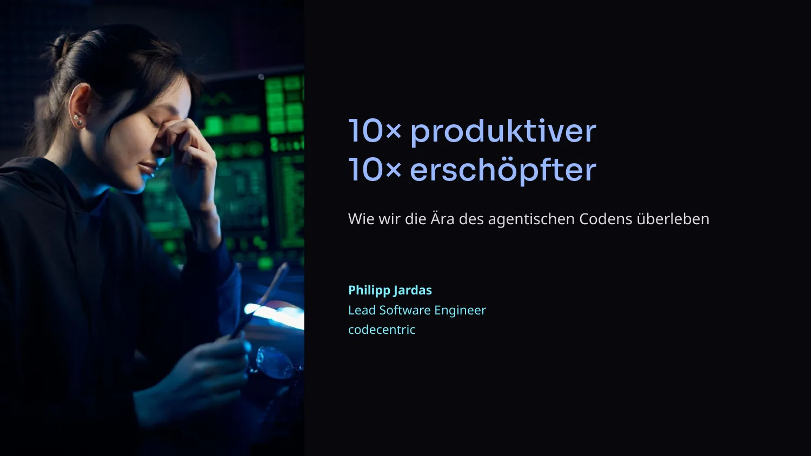
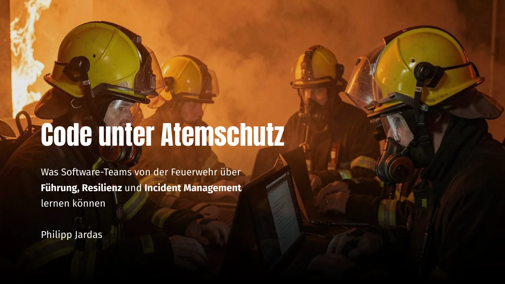
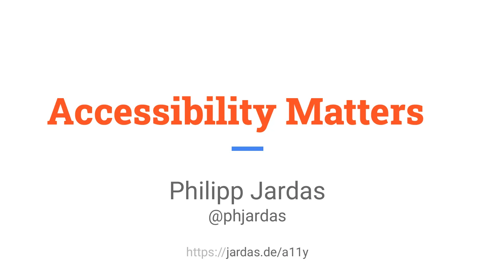
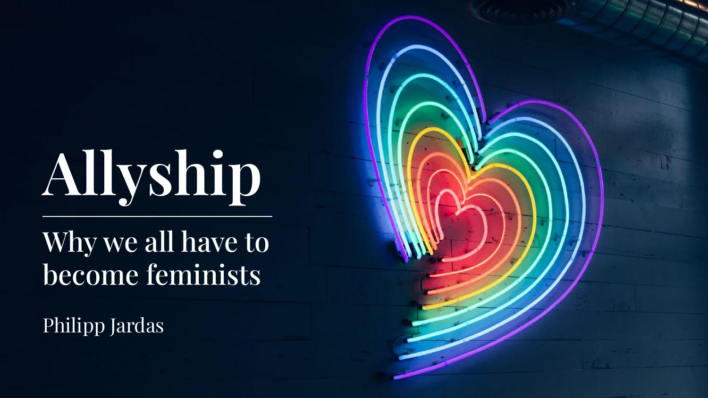
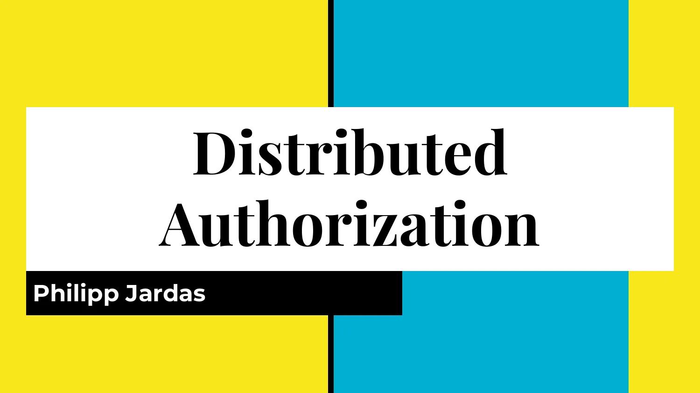
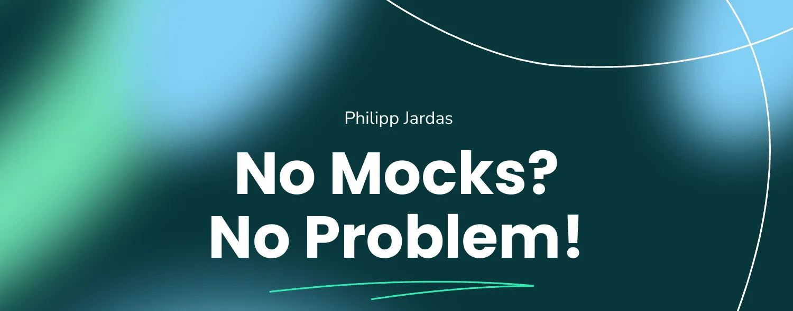
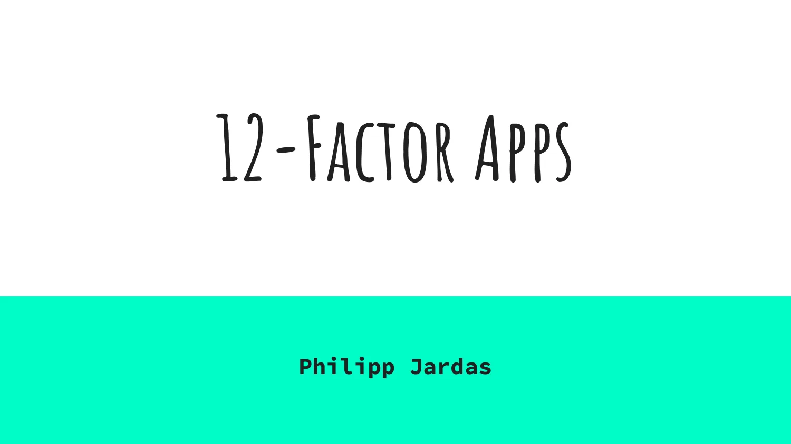

Talks

English
I'm Philipp, a Lead Software Engineer at codecentric with a soft spot for cloud-native, full-stack systems. I'm also a quadruple-dad, a volunteer firefighter, and a trainer for Nonviolent Communication, and that mix keeps finding its way back into how I think about resilient software and calm leadership under pressure.
I regularly speak at meetups and conferences on topics spanning software architecture, security, testing, accessibility and inclusion, and what engineering teams can learn from high-stakes professions. Below is a selection of my talks. Each one can be delivered in German or English.
Deutsch
Ich bin Philipp, Lead Software Engineer bei codecentric mit einer Vorliebe für cloud-native Full-Stack-Systeme. Außerdem bin ich vierfacher Vater, freiwilliger Feuerwehrmann und Trainer für Gewaltfreie Kommunikation. Diese Mischung fließt immer wieder in mein Denken über robuste Software und ruhige Führung unter Druck ein.
Ich spreche regelmäßig auf Meetups und Konferenzen zu Themen wie Softwarearchitektur, Sicherheit, Testing, Barrierefreiheit und Inklusion sowie dazu, was Engineering-Teams von Berufen mit hohem Risiko lernen können. Im Folgenden findet ihr eine Auswahl meiner Vorträge. Jeder davon kann auf Deutsch oder Englisch gehalten werden.
English
Digital Sovereignty
Architecture for an uncertain future
Every architecture decision is a bet on how the future will behave: that a vendor stays available, that an API stays stable, that prices stay predictable. This talk argues that changeability, not just cost and performance, should be a first-class criterion in architecture decisions, and introduces a model of four levers (operations, data, access, and updates) for identifying and managing the dependencies that quietly take away your ability to act.
Deutsch
Digitale Souveränität
Architektur für eine ungewisse Zukunft
Jede Architekturentscheidung ist eine Wette auf die Zukunft: darauf, dass ein Anbieter verfügbar bleibt, APIs stabil bleiben und Preise kalkulierbar sind. Der Vortrag plädiert dafür, Änderbarkeit neben Kosten und Performance als zentrales Kriterium bei Architekturentscheidungen zu behandeln, und stellt ein Modell aus vier Hebeln vor (Betrieb, Daten, Zugriff und Updates), um kritische Abhängigkeiten zu erkennen und bewusst zu steuern.

English
10x More Productive, 10x More Exhausted
How we survive the age of agentic coding
AI coding agents promise a tenfold increase in throughput, but the pace strains the team's cognitive capacity. This talk borrows principles from air traffic control, such as sector design, sterile cockpit, and dual-channel review, and applies them to software development, showing how teams can stay productive with AI agents without burning out.
Deutsch
10× produktiver, 10× erschöpfter
Wie wir die Ära des agentischen Codens überleben
KI-Coding-Agenten versprechen zehnfachen Durchsatz, doch mit dem Tempo wächst die kognitive Belastung im Team. Der Vortrag überträgt Prinzipien aus der Flugsicherung wie Sektorisierung, steriles Cockpit und Dual-Channel-Prinzip auf die Softwareentwicklung und zeigt, wie Teams mit KI-Agenten produktiv bleiben, ohne mental auszubrennen.

English
Code Under Fire
What software teams can learn from the fire department about leadership, resilience and incident management
Firefighters make life-critical decisions under extreme stress, using principles that software teams can learn a great deal from during incidents. This talk translates concepts like projecting calm, leading through goals rather than commands, and favoring radical simplicity under stress into software incident management.
Deutsch
Code unter Atemschutz
Was Software-Teams von der Feuerwehr über Führung, Resilienz und Incident Management lernen können
Feuerwehrleute treffen unter extremem Stress lebenswichtige Entscheidungen, nach Prinzipien, von denen Software-Teams im Incident-Fall viel lernen können. Der Vortrag überträgt Konzepte wie Ruhe ausstrahlen, Führung über Ziele statt Befehle und radikale Einfachheit unter Stress auf das Incident Management in der Softwareentwicklung.

English
Accessibility Matters
Accessibility affects more people than most assume, and nearly every website has automatically detectable accessibility issues. This talk explains what disability really means (permanent, temporary, situational, technological), introduces the WCAG principles, and shows concrete steps toward building more accessible products.
Deutsch
Barrierefreiheit zählt
Barrierefreiheit betrifft mehr Menschen, als man denkt, und praktisch jede Website hat automatisch erkennbare Probleme damit. Der Vortrag erklärt, was Behinderung eigentlich bedeutet (permanent, temporär, situativ, technologisch), führt in die WCAG-Prinzipien ein und zeigt konkrete Schritte für zugänglichere Produkte.

English
Allyship
Why we all have to become feminists
Categorization and discrimination are basic human mechanisms that create in-groups and out-groups. This talk explains why equality doesn't happen on its own and what it means to actively practice allyship for feminism and equality, with concrete steps: recognize your privilege, listen and learn, support equality, and take a stand.
Deutsch
Allyship
Warum wir alle zu Feminist:innen werden müssen
Kategorisierung und Diskriminierung sind menschliche Grundmechanismen, die In- und Out-Groups schaffen. Der Vortrag erklärt, warum Gleichberechtigung nicht von allein entsteht, und was es bedeutet, als Ally aktiv für Feminismus und Gleichstellung einzutreten, mit konkreten Schritten: eigene Privilegien erkennen, zuhören, Gleichberechtigung unterstützen und Haltung zeigen.

English
Distributed Authorization
How do you centralize authorization in a microservices landscape without sharing credentials? This talk walks through OAuth 2.0 and OpenID Connect, explains the different flows and access tokens, and offers architectural guidelines for secure, distributed authorization.
Deutsch
Verteilte Autorisierung
Wie zentralisiert man Autorisierung in einer Microservices-Landschaft, ohne Zugangsdaten zu teilen? Der Vortrag führt durch OAuth 2.0 und OpenID Connect, erklärt die verschiedenen Flows und Access Tokens und gibt architektonische Leitlinien für sicheres, verteiltes Berechtigungsmanagement.

English
No Mocks? No Problem!
Heavy mocking makes tests brittle, creates false confidence, and increases maintenance burden. This talk introduces sociable tests, a pattern language by James Shore that favors real implementations over mocks, using nullables and embedded stubs only at architectural boundaries.
Deutsch
Keine Mocks? Kein Problem!
Exzessives Mocking macht Tests brüchig, täuscht Sicherheit vor und erhöht den Wartungsaufwand. Der Vortrag stellt Sociable Tests vor, eine Pattern-Sprache nach James Shore, die echte Implementierungen statt Mocks nutzt und Nullables sowie Embedded Stubs nur an den Architekturgrenzen einsetzt.

English
12-Factor Apps
The Twelve Factors are a collection of best practices for building software-as-a-service applications, covering everything from codebase and configuration to backing services, logs, and admin processes. This talk walks through all twelve factors and shows how they make architecture and deployment more robust and portable.
Deutsch
12-Faktor-Apps
Die Zwölf Faktoren sind eine Sammlung bewährter Praktiken für Software-as-a-Service-Anwendungen, von der Codebasis über Konfiguration und Backing Services bis zu Logs und Admin-Prozessen. Der Vortrag stellt alle zwölf Faktoren vor und zeigt, wie sie Architektur und Deployment robuster und portabler machen.